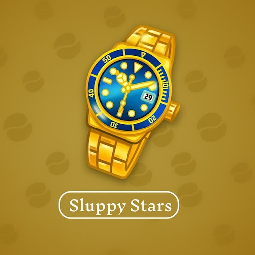

Sluppy Stars
История версий и заметки о релизах
3
обновления
1.0.2
последнее
12 багов исправлено
1.0.2
live
14 марта 2026
- Добавлены социальные сети.
- Улучшена аналитика проекта.
- Исправлено 14 критических багов.
1.0.1
14 марта 2026
- Обновление дизайна бота.
- Создана страница чейнджлога.
- Исправлены мелкие ошибки (27 багов).
1.0.0 (Beta)
8 марта 2026
- Первый запуск проекта.
- Базовый функционал бота.
- Заложено 142 бага для исправления в будущем (шутка, но звучит внушительно).
Ничего не найдено. Попробуйте изменить запрос.